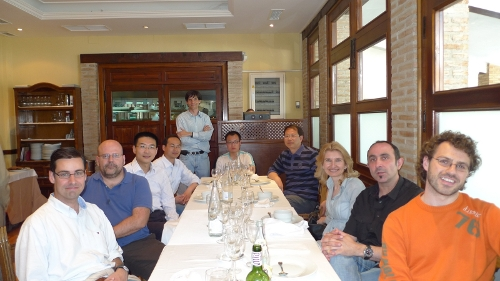
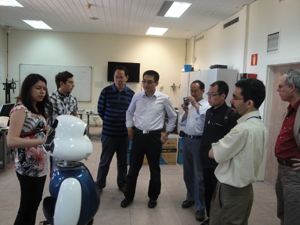
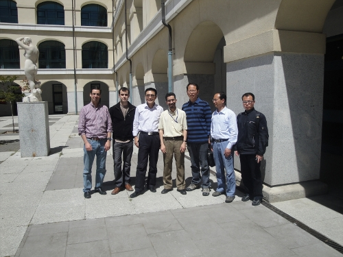
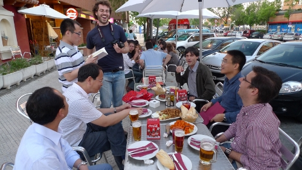

La semana del 15 al 22 de Mayo de 2010 los investigadores del Instituto de Robótica de la Universidad Beihang de Pekín vinieron de visita a Madrid: Bi Shusheng, Wei Wang, Kun Wang. Además también vino Houxiang Zhang de la Universidad de Hamburgo. Se hospedaron en la residencia Erasmo de la Universidad Autónoma de Madrid. Tres semanas antes, Éramos nosotros los que fuimos a visitar sus laboratorios. Ahora les tocó el turno a ellos.
Además de las visitas culturales obligadas (les llevamos a Segovia y Toledo), visitaron el grupo de neurocomputación Biológica (GNB) de la Universidad Autónoma de Madrid.

También estuvieron de visita en el Departamento de Ingeniería de Sistemas y Automática de la Universidad Carlos III de Madrid, donde vieron a Maggie, el proyecto HANDLE, el humanoide RH1 y el vehículo inteligente IVVI entre otros.

En esta foto estamos (de izquierda a derecha) un servidor, Javier González Quijano, Houxiang Zhang, Mohamed Abderrahim, Bi Shusheng, Wei Wang y Kun Wang. Aprovechamos para tener una reunión y establecer las bases para futuras colaboraciones en proyectos.

Y por supuesto, nada mejor que unas buenas tapas como cena de despedida, celebrando además que era el cumpleaños de Kun 😉
Y que vivan las relaciones internacionales académicas. Seguro que les encantó.
Un abrazo